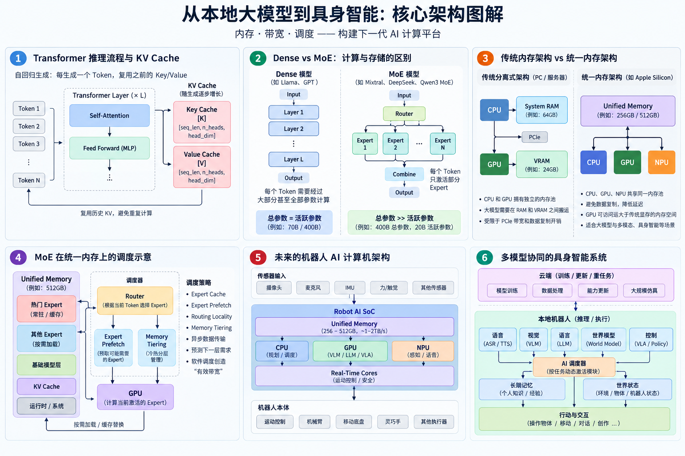

从本地大模型到具身智能：为什么高带宽统一内存可能成为下一代 AI 计算的关键
文章目录
- 一、首先理解一个 LLM 为什么这么大
- 二、量化改变了本地部署的经济学
- 三、模型权重还不是全部：还有 KV Cache
- 四、容量、带宽和算力是三个完全不同的问题
- 五、为什么 LLM Decode 特别关注内存带宽
- 六、MoE 进一步改变了这个问题
- 七、传统 CPU RAM + GPU VRAM 架构的问题
- 八、统一内存为什么有意思
- 九、为什么统一内存尤其适合 MoE
- 十、Expert Scheduling 可能成为新的性能战场
- 十一、为什么不直接使用 HBM？
- 十二、GDDR 与 LPDDR 之间也存在一个有趣空间
- 十三、未来可能出现“LPDDR 与 HBM 之间”的新内存层
- 十四、但真正推动这种硬件出现的，可能不是 AIPC
- 十五、机器人为什么比 PC 更需要本地 AI？
- 十六、未来机器人不会只有一个 LLM
- Robot Working Memory
- 十七、MoE 思想甚至可能扩展到整个机器人
- 十八、机器人可能重新定义“AI 芯片”的指标
- 十九、具身智能可能成为高带宽统一内存真正的规模化推动力
- 二十、最终得到的可能不是“一台更快的 PC”
- 二十一、从本地 LLM 到“真正属于个人的机器智能”
- 结语：真正的突破可能发生在“内存”而不是“算力”
过去谈到本地部署大语言模型，人们首先想到的问题通常是：
“我需要一块多好的 GPU？”
但如果真正分析一次 LLM 推理过程中发生了什么，会发现 GPU 算力只是问题的一部分。
随着模型量化、MoE（Mixture of Experts）、超长上下文以及具身智能的发展，我越来越觉得，未来本地 AI 最值得关注的硬件指标，可能逐渐从单纯追求 GPU FLOPS/TOPS，转向三个更加基础的问题：
模型能不能装下？数据能不能足够快地送到计算单元？系统能不能聪明地调度这些数据？
换句话说：
Memory Capacity + Memory Bandwidth + Scheduling
可能成为下一代本地 AI 计算平台最重要的三个关键词。

一、首先理解一个 LLM 为什么这么大
所谓 7B、70B、400B，本质上描述的是模型拥有多少参数。
B 是 Billion，也就是十亿：
- 7B = 70 亿参数
- 70B = 700 亿参数
- 400B = 4000 亿参数
可以把参数粗略理解为神经网络训练过程中学习得到的大量数字。
如果一个模型拥有 70B 参数，并使用 FP16/BF16 保存，那么每个参数需要大约 2 Bytes：
70B × 2 Bytes
≈ 140 GB也就是说，仅仅把一个 70B FP16 模型的权重放进内存，理论上就需要约 140GB。
如果使用 FP32：
70B × 4 Bytes
≈ 280 GB这也是为什么大型模型天然对内存容量有非常高的要求。
二、量化改变了本地部署的经济学
真正让个人运行大型模型成为可能的重要技术之一，是 Quantization（量化）。
例如将 FP16 权重压缩为 4-bit：
FP16
16 bits / parameter
↓
INT4 / Q4
约 4 bits / parameter那么 70B 模型的理论权重大小就从：
70B × 16 bits
≈ 140 GB下降到：
70B × 4 bits
≈ 35 GB但这里有一个非常容易产生误解的地方。
Q4 并不意味着实际文件严格等于 4 bits/weight。
量化之后，还需要保存 scale、min 等辅助信息。
例如某些 Q4 block 实际可能达到约：
4.5 bits / weight那么：
70B × 4.5 / 8
≈ 39.4 GB除此之外，模型中还可能存在部分未量化或者采用更高精度保存的 Tensor，以及模型 metadata、tokenizer 等数据。
因此工程上更有意义的指标其实是：
BPW — Bits Per Weight
而不仅仅是模型名字里的 Q4、Q5、Q6。
可以用一个非常简单的公式快速估算：
模型权重大小
≈ 参数量 × BPW / 8例如一个 400B 模型：
400B × 4.5 / 8
≈ 225 GB这已经把问题从“需要多少 GPU 算力”转变成了另一个更加现实的问题：
这 225GB 权重到底放在哪里？
三、模型权重还不是全部：还有 KV Cache
LLM 生成文本并不是一次把整个答案算出来，而是逐 Token 生成：
Token 1
↓
Token 2
↓
Token 3
↓
...Transformer 在 Attention 中会产生 Key 和 Value。
如果每生成一个新 Token，都重新计算前面所有 Token 的 Key/Value，计算成本会非常高。
因此推理系统会把之前 Token 的 K 和 V 保存起来。
这就是：
KV Cache（Key-Value Cache）
可以把它理解成 LLM 推理过程中的“短期工作记忆”。
对于常见 Transformer，一个粗略的 KV Cache 估算可以写成：
KV Cache
≈ Layers
× Context Length
× KV Heads
× Head Dimension
× 2（K + V）
× 每元素字节数因此 Context 越长：
8K
↓
32K
↓
128K
↓
1MKV Cache 占用就越大。
如果同时服务多个用户或者多个 Agent：
KV Cache
× concurrent sequences内存压力还会继续上升。
所以真正运行一个模型时，内存账本更接近：
Model Weights
+
KV Cache
+
Compute Buffers / Activations
+
Runtime
+
Operating System
=
实际内存需求这也是为什么一个“40GB 的模型文件”，并不意味着拥有 40GB 内存就可以舒服地运行。
四、容量、带宽和算力是三个完全不同的问题
讨论 AI 硬件时，一个非常重要的概念是：
Capacity ≠ Bandwidth ≠ Compute例如：
128GB RAM
解决的是：
模型装不装得下？
而：
800GB/s Memory Bandwidth
解决的是：
每秒能够向计算单元输送多少模型权重和数据？
GPU 的：
TFLOPS / TOPS
解决的则是：
拿到数据以后能够多快完成矩阵计算？
这三件事情不能混为一谈。
一个系统完全可能拥有：
256GB RAM所以能装下一个很大的模型；
但只有：
200GB/s Memory Bandwidth结果就是：
模型能运行，但是 Token 生成速度很慢。
反过来，一块拥有巨大显存带宽的 GPU，如果只有 24GB VRAM，也可能面对：
算得非常快，但模型根本装不进去。
五、为什么 LLM Decode 特别关注内存带宽
对于单用户、小 Batch 的自回归 LLM 推理，每生成一个 Token，都需要读取大量模型权重。
因此很多情况下，Decode 阶段会表现出明显的 Memory-Bound 特征。
可以做一个非常粗略但很有启发性的计算。
假设某个模型每生成一个 Token 实际需要读取约 20B 参数：
Active Parameters = 20B
Average BPW = 4.5对应数据量约：
20B × 4.5 / 8
≈ 11.25 GB如果有效内存带宽为：
400 GB/s忽略所有其他开销，理论带宽上限约：
400 / 11.25
≈ 35.6 Token/s如果内存带宽提高到：
800 GB/s理论上限约：
800 / 11.25
≈ 71 Token/s如果达到：
1.6 TB/s则约为：
1600 / 11.25
≈ 142 Token/s现实性能当然不会达到这个简单除法的理想值，因为还存在 Attention、KV Cache、Router、内存访问效率、计算、同步等大量开销。
但这个简单模型揭示了一个非常重要的事实：
对于某些 LLM 推理场景，增加 Memory Bandwidth 的价值可能不亚于增加 GPU FLOPS。
六、MoE 进一步改变了这个问题
Dense 模型有一个很直接的特点：
如果模型拥有 70B 参数，那么一次 Token 推理基本需要经过整个网络的大部分参数。
MoE 则不同。
假设：
Total Parameters: 400B
Active Parameters: 20B完整模型拥有 400B 参数，但每个 Token 只激活其中的一部分 Expert。
于是 MoE 出现了一种非常特殊的硬件需求：
Memory Capacity
要求非常大
因为整个模型需要被保存
+
Compute Requirement
相对总参数量小很多
因为每个 Token 只激活部分 Expert换句话说：
MoE 是一种“容量巨大，但稀疏计算”的模型。
这正是统一内存开始变得非常有吸引力的地方。
七、传统 CPU RAM + GPU VRAM 架构的问题
传统 PC 通常是：
CPU
│
System RAM
│
PCIe
│
GPU
│
VRAMCPU 和 GPU 拥有各自独立的内存池。
如果模型完全放得进 VRAM：
Model
↓
VRAM
↓
GPU性能很好。
但如果模型大于 VRAM，就可能需要：
RAM
↕
PCIe
↕
VRAM进行 CPU/GPU Offloading。
例如一个模型需要 80GB，而 GPU 只有 24GB VRAM，那么部分 Layer 或 Tensor 可以留在系统 RAM 中，部分放在 GPU。
这让“大模型能够运行”成为可能，但 PCIe 数据传输、内存复制以及不同计算设备之间的协调都会产生额外成本。
八、统一内存为什么有意思
Apple Silicon 提供了另外一种思路：
Unified Memory
│
┌───────────┼───────────┐
↓ ↓ ↓
CPU GPU NPUCPU 和 GPU 不再必须拥有完全分离的物理内存池。
这带来了一个对大模型非常有价值的能力：
GPU 可以访问一个远大于普通消费级独显 VRAM 的统一内存空间。
所以统一内存真正吸引人的地方，并不一定是：
Apple GPU 比高端独立 GPU 更快。
而是：
在合理功耗和系统复杂度下，让 GPU 可以访问非常大的内存池。
对于 7B 模型，这种优势没有那么明显。
但当模型进入：
70B
100B
200B
400B
700B问题就完全不同了。
九、为什么统一内存尤其适合 MoE
假设未来有一个：
400B Total Parameters
20B Active Parameters
4.5 BPW完整权重大约：
400B × 4.5 / 8
≈ 225 GB如果系统拥有：
256GB Unified Memory理论上已经开始接近让整个模型常驻 GPU 可访问内存的条件。
如果拥有：
512GB Unified Memory则可以同时容纳：
Model Weights
KV Cache
Runtime
World State
Other Models
Operating System此时真正的问题从：
“模型放在哪里？”
转变成：
“如何让 GPU 以最高效率访问当前需要的 Expert？”
这就是一个完全不同的优化空间。
十、Expert Scheduling 可能成为新的性能战场
MoE 中并不是所有 Expert 每个 Token 都参与计算。
因此理想的推理系统可以尝试分析：
Router
↓
当前 Token
↓
需要哪些 Expert？
↓
这些 Expert 在哪里？
↓
下一层可能需要哪些 Expert？进而实现：
Expert Cache
+
Expert Prefetch
+
Routing Locality Optimization
+
Asynchronous Transfer
+
Memory Tiering例如：
Full Model
Unified Memory
│
↓
Router
│
┌────────┴────────┐
↓ ↓
Hot Experts Cold Experts
│
Fast Memory
│
GPU如果系统能够预测接下来可能访问哪些 Expert，就可以提前 Prefetch。
如果某些 Expert 在一段任务中频繁出现，就可以保持在更高速的缓存层。
这时候 LLM Runtime 已经不再只是一个“矩阵计算程序”。
它越来越像：
神经网络推理引擎 + CPU Cache + 虚拟内存系统 + 数据库 Buffer Pool + Scheduler
的结合。
换句话说：
软件调度本身可能创造“有效带宽”。
十一、为什么不直接使用 HBM？
这会自然引出一个问题：
既然 LLM 如此需要内存带宽，为什么不直接给统一内存使用 HBM？
答案是：
技术上完全可以。
Unified Memory 描述的是系统的内存共享方式。
HBM、GDDR、LPDDR 描述的是不同的物理内存技术。
所以理论上完全可以设计：
CPU ─┐
GPU ─┼── 512GB HBM Unified Memory
NPU ─┘对于 AI 来说，这甚至是一种非常理想的架构。
问题在于：
成本。
HBM 需要复杂的堆叠 DRAM、超宽 I/O、先进封装以及复杂的芯片互连。
它非常适合昂贵的数据中心 GPU，但对于消费级设备而言，目前仍然过于昂贵。
十二、GDDR 与 LPDDR 之间也存在一个有趣空间
GDDR 提供比普通 DDR/LPDDR 更高的带宽。
理论上完全可以构建：
CPU
│
GPU
│
NPU
│
256GB GDDR Unified Memory
│
~1TB/s但 GDDR 的设计更偏向 GPU 的高吞吐访问模式，而 CPU 更敏感于低延迟和能效。
因此今天的通用计算 SoC 使用 LPDDR 是一个很合理的折中：
CPU Performance ✓
GPU Access ✓
Large Capacity ✓
Low Power ✓
Cost ✓
Bandwidth ○但随着 AI workload 占比越来越高，这个最优解可能发生变化。
十三、未来可能出现“LPDDR 与 HBM 之间”的新内存层
真正有意思的未来未必是：
LPDDR
vs
GDDR
vs
HBM三选一。
而可能出现一种新的 Memory Tier：
比 LPDDR 更宽、更快；比 HBM 更便宜、容量更大。
例如：
AI SoC
┌────────────────┐
│ CPU / GPU / NPU│
└───────┬────────┘
│
Wide Memory Fabric
│
┌────────┼────────┐
↓ ↓ ↓
Stack 0 Stack 1 Stack 2 ...假设：
8 × 64GB
= 512GB每个 Memory Stack 提供：
200GB/s聚合带宽就是：
8 × 200GB/s
= 1.6TB/s这已经非常接近一台为本地大模型专门设计的 Memory-Centric AI Computer。
它不一定追求最高 FP32 FLOPS。
它真正追求的是：
Unified Memory 512GB
Memory Bandwidth 1.6TB/s
Low Precision INT4 / FP8
Power 可接受
Cost 可量产十四、但真正推动这种硬件出现的，可能不是 AIPC
这也是整个推导中我觉得最有意思的地方。
如果市场只是：
“少数 AI 爱好者想在家里运行 400B 模型。”
那么芯片厂商未必有足够动力制造这种奇怪的硬件。
但是，如果未来出现：
数百万台具身智能机器人需要本地运行大型 AI 模型
整个经济模型就不同了。
十五、机器人为什么比 PC 更需要本地 AI？
对于 PC：
Local AI
vs
Cloud AI很多时候只是成本、隐私和体验之间的选择。
对于机器人而言：
Local AI 很可能是基本能力。
原因非常简单：
机器人需要与真实世界形成闭环。
不同任务存在不同时间尺度：
1~10 ms
Motor / Balance / Torque Control
10~100 ms
Vision / Perception / Motion
100 ms ~ seconds
VLM / VLA / Planning / Reasoning如果所有决策都经过：
Robot
↓
Internet
↓
Cloud
↓
LLM
↓
Internet
↓
Robot网络延迟、抖动和断网都会成为系统可靠性的一部分。
因此更合理的架构可能是：
Cloud
Training / Updates / Heavy Tasks
│
↓
Robot Brain
│
┌───────────┼───────────┐
↓ ↓ ↓
VLM LLM World Model
│ │ │
└───────────┼───────────┘
↓
VLA
↓
Robot Control
↓
Physical Body即：
Cloud Training + Local Inference
十六、未来机器人不会只有一个 LLM
真正的具身智能系统很可能同时运行：
Vision
+
VLM
+
LLM
+
World Model
+
VLA
+
Speech Recognition
+
Speech Synthesis
+
Navigation
+
Manipulation
+
Long-Term Memory这又让统一内存的意义发生了一次变化。
它不再只是：
“一个可以放 400B 模型的大内存。”
而可能成为：
Robot Working Memory
里面同时保存：
Model Weights
KV Cache
Camera Features
Spatial Map
Object States
World State
Robot State
Conversation
Episodic Memory
Personal KnowledgeCPU、GPU、NPU 以及其他专用加速器都可以访问这些数据。
这可能比单纯让一个 LLM 跑得更快更加重要。
十七、MoE 思想甚至可能扩展到整个机器人
今天 MoE 的 Expert 通常存在于一个神经网络内部：
Router
├── Expert 1
├── Expert 7
└── Expert 31但未来具身智能也可能形成一种更宏观的 Conditional Compute：
Robot
│
AI Scheduler
│
┌──────────────┼──────────────┐
↓ ↓ ↓
Language Vision Action
│ │ │
↓ ↓ ↓
Conversation Perception Manipulation
│
↓
World Model例如机器人正在与你聊天：
Language
Speech
Memory占据主要计算资源。
当你说：
“把桌上的红色杯子拿给我。”
计算路径可能切换为：
Speech
↓
Language Understanding
↓
Object Grounding
↓
Vision
↓
Spatial Reasoning
↓
World Model
↓
Manipulation
↓
Motor Policy并不是所有 AI 模块都需要一直以最高性能运行。
这实际上就是更高层次的：
Sparse Compute / Conditional Compute。
十八、机器人可能重新定义“AI 芯片”的指标
今天营销 AI 芯片时，经常首先强调：
TOPS
TFLOPS
GPU Cores但未来 Robot AI Computer 更值得关注的可能是：
Unified Memory Capacity
Memory Bandwidth
INT4 / FP8 Throughput
Active Parameters / Watt
KV Cache Capacity
Memory Latency
Real-Time Control Latency
Sensor Bandwidth
Power Consumption一台理想的机器人 AI 计算机可能更像：
Robot AI Computer
256~512GB Unified Memory
│
1~2TB/s
│
┌──────────┼──────────┐
↓ ↓ ↓
CPU GPU NPU
│ │ │
Planning VLM/VLA Vision
Routing LLM Speech
│
Real-Time Cores
│
Motor / Sensors而且还必须满足一个数据中心 GPU 很少面对的条件：
Power < 100~300W
Weight 足够低
Cooling 可装进机器人
Offline 可以工作
Latency 可预测
Cost 可以量产十九、具身智能可能成为高带宽统一内存真正的规模化推动力
假设未来只是：
10 万个本地 LLM 爱好者需要 512GB 高带宽统一内存。
这种市场可能不足以推动整个 DRAM 与封装产业发生变化。
但如果未来出现：
1,000,000 Robots
↓
10,000,000 Robots
↓
100,000,000 Robots情况就完全不同。
每台机器人都需要：
128~512GB Memory
+
High Bandwidth
+
Low-Power AI SoC
+
INT4 / FP8 Matrix Engines
+
Sensors
+
Actuators这会形成巨大的规模经济。
今天昂贵的：
Stacked DRAM
Wide Memory Bus
Advanced Packaging
Large Unified Memory可能因此逐渐降低成本。
然后这些技术又可能反向进入：
Robot
↓
Workstation
↓
AI PC
↓
Consumer Computer二十、最终得到的可能不是“一台更快的 PC”
而是一种新的计算机。
过去几十年个人计算机的基本架构是：
CPU
+
RAM
+
Storage
+
GPU未来 AI-native Computer 可能更接近：
Large Unified Memory
+
Heterogeneous Compute
+
Sparse Models
+
Conditional Compute
+
Intelligent Memory Scheduling
+
Persistent AI Memory其中最重要的资源可能不再只是 CPU Cycle。
而是：
AI Memory。
二十一、从本地 LLM 到“真正属于个人的机器智能”
这也是我认为本地部署最值得期待的地方。
如果未来个人拥有一个机器人，它真正有价值的部分可能不只是出厂时下载的 LLM 权重。
而是它在几年中积累的：
你的项目
你的作品
你教给它的技能
家庭空间地图
物品的位置
长期记忆
共同经历
个人知识库
工作上下文如果所有这些东西都存在云端，那么这台机器人本质上仍然更接近：
一个云端 AI 服务的物理终端。
但如果主要模型、长期记忆、空间记忆和个人知识都能够运行、存储在本地：
Your Robot
│
┌─────────┼─────────┐
↓ ↓ ↓
Models Memory Skills
│ │ │
└─────────┼─────────┘
↓
Local AI它才真正开始接近：
一个由个人拥有的智能系统。
结语：真正的突破可能发生在“内存”而不是“算力”
我们习惯于把 AI 进步理解成：
GPU 更快了。
但对于下一阶段的本地 AI，真正关键的突破也许来自另外一条路线：
更大的内存容量
↓
更高的内存带宽
↓
更低的模型 BPW
↓
更稀疏的模型架构
↓
更聪明的 Expert Scheduling
↓
更高效的异构计算最终形成：
Memory-Centric AI Computing。
如果这条路线成立，那么本地大模型、AI PC、自动驾驶和具身智能，看起来彼此不同，底层可能正在提出同一个问题：
如何在有限的成本和功耗下，让一台机器拥有足够大的“AI 大脑”，并以足够高的带宽持续运行它？
而一旦机器人产业把这种需求推到百万甚至千万级规模，大容量、高带宽统一内存就不再只是少数本地 LLM 爱好者想象中的昂贵配置。
它可能成为一种新的基础计算平台。
到那时，普通人在可承受的价格范围内拥有一个长期陪伴自己的机器人，也许不再是遥远的科幻场景。
它可以陪我们工作、学习和娱乐，也可以与我们共同创作。
更重要的是，它所拥有的模型、技能、长期记忆和个人知识，可以主要存在于我们自己的设备中，而不是永远依赖远方的数据中心。
所以，本地大模型真正值得期待的未来，或许从来都不只是：
“什么时候我能在家里运行一个 700B 模型？”
真正的问题可能是：
“什么时候强大的机器智能，会从一种我们通过网络租用的服务，变成一种普通人真正可以拥有的计算能力？”
如果那一天到来，它带来的变化，可能远远超过今天所谓的“AIPC”。
它意味着机器智能第一次真正从数据中心走进了个人世界。